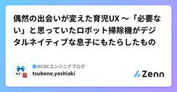
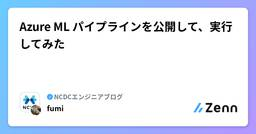
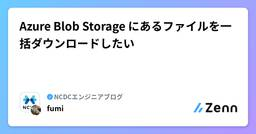
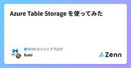
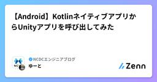

NCDCエンジニアブログのフィード
https://zenn.dev/p/ncdc
NCDC株式会社( https://ncdc.co.jp/ )のエンジニアチームです。 募集中のエンジニアのポジションや、採用している技術スタックの紹介などはこちら( https://github.com/ncdcdev/recruitment )をご覧ください！ ※エンジニア以
フィード

偶然の出会いが変えた育児UX 〜「必要ない」と思っていたロボット掃除機がデジタルネイティブな息子にもたらしたもの
NCDCエンジニアブログのフィード
1. イントロダクション：諦めていた家事の効率化子育て中の家庭において、家事の負担軽減は永遠のテーマです。私たちNCDCでも、クライアント企業の事業を通じて、いかにユーザーの日常的なペインポイントを解消し、より良い体験（UX）を提供できるかを常に考えています。我が家も例に漏れず、共働きで4歳の息子と1歳の娘がいます。ロボット掃除機の導入は検討はしていましたが、「床に置いているものが多いから、ロボット掃除機を導入したとしてもどうせ掃除機使うことになるからいらない」という結論に達していました。これが、長らく我が家の持っていたインサイトでしたが、しかし、ひょんなことから無料でロ...
3日前

Azure ML パイプラインを公開して、実行してみた
NCDCエンジニアブログのフィード
はじめに本記事では、Azure Machine Learning（Azure ML）で作成したパイプラインを公開し、ローカルから実行させてみたので、その手順を紹介します。Azure ML のパイプラインを REST API 経由で実行できるようにすることで、以下のようなメリットがあります。CI/CD パイプラインからの自動実行外部システムとの連携スケジュール実行や条件付き実行の実装チーム間でのパイプライン共有 前提条件以下の前提で話を進めます。Azure サブスクリプションを持っていることAzure ML ワークスペース、パイプラインが作成済みであること...
6日前

Azure Blob Storage にあるファイルを一括ダウンロードしたい
NCDCエンジニアブログのフィード
とあるプロジェクトで、Azure Blob Storageを使っています。複数ファイルを一気にダウンロードしたいのですが、現状Azureポータル上からはできないため、一つずつ選択してダウンロードするのはあまりにも面倒です.....代わりに Azure Storage Explorer というのを使うと、複数ファイルを一括でダウンロードすることができたので、本記事ではインストールからダウンロードまでのやり方をご紹介します（Macを使ってやっていきます）。 インストール以下リンクから、Azure Storage Explorerをダウンロードするhttps://azure.mic...
6日前

Azure Table Storage を使ってみた
NCDCエンジニアブログのフィード
はじめに私が参画しているとあるプロジェクトで、Blob Storage に CSV ファイルを置いてデータを管理していましたが、1 件のデータ取得や更新でもファイル全体を読み書きする必要があり、メタデータやタグを使って頑張っていましたが、機能数が増えるにつれ非効率さが問題になってきたので、別の方法を模索していました。そこで、Azure Table Storage を試してみたので、本記事では、実際に使ってみてわかったことをまとめます。Azure Table Storage の基本的な使い方RDB や Cosmos DB との違い実際に使ってわかった向き不向き Azu...
6日前

【Android】KotlinネイティブアプリからUnityアプリを呼び出してみた
NCDCエンジニアブログのフィード
Kotlin のネイティブアプリから Unity アプリを呼び出してみた内容を記載します。※ 備忘録 & とりあえずの動作検証であったため、細かい部分の解説はありません。かなり "えいやっっ!" で動作させてみた内容です。【検証環境】Unity 6.2（6000.2.9f1）Android Studio Narwhal Feature Drop | 2025.1.2Kotlin:: 2.0.2Android, Unity Export: build.gradlecompileSdk: 36minSdk: 31targetSdk: 36【目次...
7日前

[TS TIP] 実用的な型定義を理解する 14選（後編）
NCDCエンジニアブログのフィード
最初に前編では型レベル関数、Conditional Types、infer、satisfies など、「型を操作する基礎」 を扱いました。後編では 8~14 を扱います。前編は以下です。https://zenn.dev/ncdc/articles/022a1500718a71では、始めます。 8. Template Literal Types で文字列パターンを型にするTypeScript 4.1 以降、文字列型を 文字列の組み合わせパターンで定義できます。API の URL を型で保証したい場合type ApiVersion = "v1" | "v2";ty...
8日前
[TS TIP] 実用的な型定義を理解する 14選（前編）
NCDCエンジニアブログのフィード
最初に普段TypeScriptを使用して実装している身として、型定義は非常に重要であることを理解しているつもりです。しかし、普段の業務では深い型定義の知識がなくても、調べればそれなりに実装できてしまう一方で、見ただけでパッと理解できていない自分がいることに焦りを感じました。そこで今回は、TypeScriptの型を基礎から実務で使うであろう機能を厳選し、記事に残しておこうと思います。本記事は 前編 と 後編 で分けていこうと思います。前編では 1〜7 を扱います。!本記事は、基本的なTSの型定義の使い方を理解している前提となるため、TS初学者や見直したい（リテラル...
8日前
[TIP] inversifyを使用してDIを本格化する（前回の続き）
NCDCエンジニアブログのフィード
最初に前回の記事はこちらです。https://zenn.dev/ncdc/articles/0be30eb5e3f2a0前回の記事では、簡易的にコンストラクタで部品を渡すだけの DI を体験しました。今回は、DI ライブラリ inversify を使って、より本格的な依存性注入を実装してみます。inversify は TypeScript 向けの DI ライブラリで、Decorator で依存関係を明示Container で管理複数の実装を簡単に切り替え可能といった特徴があります。では始めます。 インストールnpm install inversify r...
8日前
[TIP] 改めてDI + DDDを理解する
NCDCエンジニアブログのフィード
最初に今更ながら、DIについて曖昧な理解を断ち切りたいと思いました。そのために、今回は「hono + DI + DDD」を使用して、備忘録として残しておきます。では始めます。!本記事では、DI + DDDの理解を深めることが目的のため、「inversify」等のライブラリは使用せず、簡単な実装例を記載しています。実務ではあまり有効的な実装ではないことが前提です。 DI（依存性注入）とは？巷では、「依存性注入」という小難しい言葉を使用して説明されることが多いですが、要するに、「部品同士が直接くっつくのではなく、必要な部品は外から渡してあげる仕組み」のことです。...
8日前
[ORM] drizzleとは？基本的なクエリまで
NCDCエンジニアブログのフィード
最初に最近プロジェクトでdrizzleを使用する機会があったので、備忘録として残しておきます。内容としては基本的な操作になります。では始めます。 他のORMとの違いは？ CLI依存が少ない例えば、prismaでは基本的に以下の流れで開発を進めると思います。① スキーマを定義するschema.prismamodel User { id Int @id @default(autoincrement()) name String email String @unique}② CLIを実行する※ これやらないと、tsの補完がされないか...
8日前
ハイダイナミックレンジイメージ（HDRI）とは何か？
NCDCエンジニアブログのフィード
初めに以前にこのような360度の画像はHDRIであるhdr/exrファイルとして保存するのが適切であると学びました。実際にこのフリー画像が掲載されているサイトからダウンロードする際はhdr/exr形式で保存されます。AIに聞いてみるとHDRIとは「人間の目に見えるような、明るい部分から暗い部分まで、非常に広い範囲の輝度（明るさ）情報を記録した画像」だそうですが、いまいちピンと来ないので詳しく見てみました。 比較してみるこれスクリーンショットだとpngファイルになってしまうので違いがわかりませんが、上のHDRIと下のpngファイルだとランプの明るさが違っています。HDRI...
9日前
Xのapiを使って画像・動画付きのポストを自動化する（GAS）
NCDCエンジニアブログのフィード
はじめにスプレッドシートにポストしたい内容をリストで書いておいて、あとはそれをランダムでポストするスクリプトを作ってみました。画像のurlはwebの画像アドレスか、googledriveのパスを指定すればそこからアップロードするようにしました。 Xの管理者ポータルまで環境設定まずAPIを使用するにあたって設定をしなければいけないのですが、この記事通りにやればすぐに完了しました。手順は全く同じなのでここでは割愛します。https://zenn.dev/gas/articles/37b6d7de715251 GASとXを繋げる認証まずはgasとxを繋げる認証を行なっ...
9日前
SDKMANでプロジェクト毎にJavaバージョンを切り替える
NCDCエンジニアブログのフィード
kotlin プロジェクトなどの場合、プロジェクト毎に Java のバージョンを切り替えたいことがあるかと思います。そんな時にサクッと Java のバージョンを切り替えられるSDKMANというツールがあります。 SDKMAN とはSDKMANは Software Development Kit Managerであり、macOS などの Unix 系システム上で、SDK （フレームワークやビルドツールなど含む）を管理するためのツールです。今回は Java のみを対象に説明しますが、Java 以外にも有名どこで言うと Gradle や Spring Boot なども管理できるみた...
14日前
aws loginコマンドが来たのでAWSのアクセスキーを削除したかったけど、やっぱり保留しました。
NCDCエンジニアブログのフィード
はじめにAWS CLIにaws loginコマンドが実装されました。https://aws.amazon.com/jp/blogs/security/simplified-developer-access-to-aws-with-aws-login/このコマンドを使うとアクセスキーがなくてもAWS CLIを使用できます。つまりアクセスキーの発行が不要となるので、アクセスキーの漏洩という大きなセキュリティリスクを排除することが出来ます。私の場合、仕事ではAWS IdCに移行済でアクセスキーは使っていないので影響はないかなと思ったのですが、よく考えたら個人用のAWSアカウントは普...
14日前
LazyVimでdenoとtsのlspを共存させる
NCDCエンジニアブログのフィード
はじめにもともとtypescriptはよく使うのですが、個人的にdenoも触る機会が出てきました。私は普段nvimでLazyVimを使っています。となれば当然nvimでもdenoを書きたいのですが、lspがtsとかぶって快適なvimライフが送れなくなってしまいました。これはいかんということでdenoとtsのlspをいい感じに共存させる設定をしました。なかなかうまくいかなくてそれなりにプラグインのソースも読んだので、備忘録的にまとめておきます。denoプロジェクトでvtslsも起動してしまう普通のtsプロジェクトでdenolsも起動してしまう 関係するものne...
18日前
ZennのPublicationで投稿を続けたら、社内のエンジニアと技術書を出版することになりました
NCDCエンジニアブログのフィード
買ってください。秀和システム 新社 からでます。Amazonによると11/27に発売です。『TECHNICAL MASTER はじめてのAWSモダンアプリ開発入門』https://www.amazon.co.jp/dp/4798075299AWS本ですが、インフラがメインの本ではなくモダンなWebアプリ開発の本です。もっというとAmplify Gen2を使ったモダンアプリ開発入門本になります。生成AI要素もあります。ターゲットは「何らかのアプリ開発はしたことはあるけどクラウドは使ってない」or「クラウドは使っているけどEC2とかのIaaS上でアプリを動かしています」といった層向け...
21日前
デザイナーがFigma×Cursor+MCPサーバーを連携してコードを書かずFigmaプラグインを社内公開した話
NCDCエンジニアブログのフィード
こんにちは。NCDCでUX/UIデザイナーをしている、ふくだです。Figmaでデザイン作業中、「この作業、毎日やってるけど地味に面倒だな…」「一括で処理したいのに、微妙に要件に合うプラグインがない…」と感じたことはありませんか？私はあります。この記事は、JavaScriptもTypeScriptも書けないデザイナーが、AIコーディングツール「Cursor」を利用して、面倒な作業を助けるFigmaプラグインを自作しチーム内に公開するまでの内容になります。「コード書けないし…」と諦めているデザイナーや、AIでどうやって業務改善できるか模索している方にとって、少しでもヒントになれば幸い...
22日前
その「顧客価値」、誰がいくらで買いますか？ ── 開発予算と事業継続性から考えるアジャイル開発
NCDCエンジニアブログのフィード
アジャイル開発で「価値」を「予算」に繋げ、プロジェクトを継続させるために開発チームが持つべき視点 私たちが追求する「顧客価値」を、どう測るかはじめまして。NCDCでITコンサルタントを務める局（つぼね）です。普段はアジャイル開発のPMとして、新規事業の立ち上げをご支援しています。今回は、「プロダクトの開発が続く」という当たり前でもあるような光景が、なぜ続くのか、そこにあるマインドについて明らかにしていきたいと思います。アジャイル開発の目的が「顧客にとっての価値」を迅速に届けることである、というのは、今や多くの開発チームにとって共通の理解でしょう。しかし、その「顧客価値」とは、...
23日前
ubuntu-slimに切り替えると実行時間がどれほど伸びるか比較する
NCDCエンジニアブログのフィード
先日GitHub Actionsに新しいrunnerとしてubuntu-slimが追加されました。https://zenn.dev/my_vision/articles/actions-ubuntu-slimコストが1/4まで減るのはとても魅力的ですが、スペックが下がるためjobの実行時間がだらだらと伸びてしまっては困ります。実際に動かして許容できる範囲か確認してみました。観点は2つです。jobが実行時間以外今まで通り動くかそれぞれのjobの実行時間がどれくらい伸びるか 比較手順今回はPR契機のjobを比較します。まずはPRを2つ作ります。blank: defa...
23日前
iPadでスキャンした3DデータをThree.jsで表示してみた
NCDCエンジニアブログのフィード
はじめに弊社NCDCには2日間のハッカソンがあり、私は「iPadのLidarスキャナで撮ったデータをThree.jsで表示する」というテーマに挑戦してみました。本記事では、ハッカソンで制作した成果物の紹介と、制作過程で得た知見を共有したいと思います。 目的このハッカソンで特に焦点を当てたのは次の 2 点です。LiDAR スキャンで得た生データは、どれだけシンプルな手順で Web（Three.js）上に再現・閲覧可能にできるのかを検証する。「敷居が高い」と感じていた Three.js の実装部分を、どこまで AIに委ねて開発速度を上げられるか探る。 実装した機能...
24日前